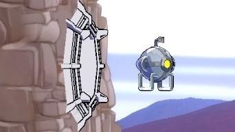

Dit is een eighty's style Metroidvania game.
Hier heb ik aan gewerkt op een hybride leeromgeving van mijn school.
Hier werken we als een echte game studio in een team van programmeurs en artists.
We doen elke ochtend een stand-up en elke middag een stand-down.
We werken professioneel met git en scrum, ook we worden gepusht om constant goede code te schrijven.
Attack drone
Dit is het eerste wat ik gedaan heb in de studio.
Ik en iemand anders moesten een attack drone afmaken en tweaken die het jaar daarvoor was gemaakt.
We moesten dus in het diepen duiken en kijken hoe het gemaakt was en hoe we de verbeteringen konden maken.
We hebben hier toegevoegd dat de drone na drie keer aanvallen even wacht en dan weer door aanvalt.
Ook hebben we meerdere bugs weten te fixen en de gameplay inmens weten te verbeteren.

Magnetic Platform
Hier heb ik samen met iemand aan gewerkt door te para-programeren.
Dit is een platform die dichtbijzijnde drones naar zich toe trekt en vasthoudt.
Dit hebben we gedaan door de platform meerdere states te geven.
Het kijkt of er een drone in de buurt is, dan trekt het die drone naar binnen en als het in het midden is dan wordt de drone vastgezet.
Als je de drone dan slaat wordt het eruit gegooit.
Het platform gaat dan even op pauze en gaat daarna weer terug naar het kijken naar een drone.
Dit hebben we gemaakt met een open/closed principe.
Dit is dat je iets maakt wat je niet zomaar kan veranderen,
maar wel op kan uitbreiden. Je zou niet kunnen veranderen dat er nu 2 gepakt kunnen worden,
maar je kan wel toevoegen dat je de platform met een knop uitzet.